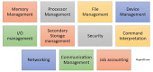

Functions of Operating System
Links:

1-Process management:-
Process management helps OS to create and delete processes. It also provides mechanisms for synchronization and communication among processes.
2-Memory management:-
Memory management module performs the task of allocation and de-allocation of memory space to programs in need of this resources.
3-File management:-
It manages all the file-related activities such as organization storage, retrieval, naming, sharing, and protection of files.
4-Device Management:-
Device management keeps tracks of all devices. This module also responsible for this task is known as the I/O controller. It also performs the task of allocation and de-allocation of the devices.
5-I/O System Management:-
One of the main objects of any OS is to hide the peculiarities of that hardware devices from the user.
6-Secondary-Storage Management:-
Systems have several levels of storage which includes primary storage, secondary storage, and cache storage. Instructions and data must be stored in primary storage or cache so that a running program can reference it.
7-Security:-
Security module protects the data and information of a computer system against malware threat and authorized access.
8-Command interpretation:-
This module is interpreting commands given by the and acting system resources to process that commands.
9-Networking:-
A distributed system is a group of processors which do not share memory, hardware devices, or a clock. The processors communicate with one another through the network.
10-Job accounting:-
Keeping track of time & resource used by various job and users.
11-Communication management:-
Coordination and assignment of compilers, interpreters, and another software resource of the various users of the computer systems.